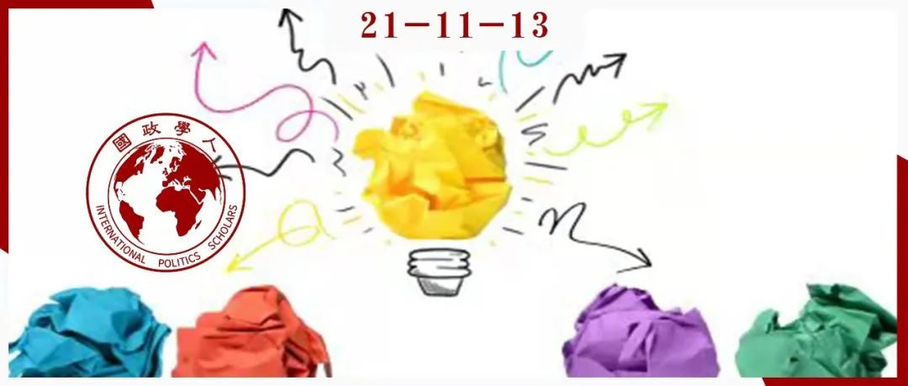

收录于合集 #《国际关系前沿》2021年第11期 18个

作品简介
作者： 约翰·米尔斯海默（John Mearsheimer），芝加哥大学政治学系杰出教授（the R. Wendell Harrison Distinguished Service Professor）,国际关系理论家，“进攻性现实主义”的创立者，著有《大国政治的悲剧》、《大幻想：自由主义之梦与国际现实》、《以色列游说集团与美国对外政策》（与斯蒂芬·沃尔特合著）等。斯蒂芬·沃尔特（Stephen Walt），哈佛大学国际关系学教授（the Robert and Renee Belfer Professor of International Affairs），“威胁均衡”理论的提出者，著有《以色列游说集团与美国对外政策》（与约翰·米尔斯海默合著）、《联盟的起源》等。
编译： 阮镇炜（国政学人编译员，伦敦大学学院）
来源： Mearsheimer, J and Walt, S. (2013) Leaving theory behind: Why simplistic hypothesis testing is bad for International Relations, European Journal of International Relations , 19(3), pp.427-457
归档： 《国际关系前沿》2021年第11期，总38期。

内容提要
理论创立与假设检验都是社会科学的关键组成部分，但前者更为重要。然而，近些年来，国际关系学者并没有花费太多功夫去创立和改进理论，或是用理论去指导实证研究。相反，他们越来越重视“单纯的假设检验”，强调充分证实的经验规律（empirical regularities）。然而，把单纯的假设检验置于优先地位是一种错误倾向，因为对理论的关注不足会导致错误的实证模型，或误导对关键概念的衡量。此外，国际关系学中大部分数据的质量不佳，这使得单纯的假设检验难以产出积累性知识。这种从理论向单纯的假设检验的转向，反映了学者们扩张国际关系学领域并将其专业化的持续渴望，以及学者个人短期的职业激励。这种倾向也扩大了象牙塔与现实世界之间的鸿沟，使政策制定者和关心相关事务的公民认为国际关系学术研究的用处不大。遗憾的是，这种趋势很可能持续下去，除非学者们集体决定改变主流学术激励机制。
文章导读
01
引言
在国际关系领域，理论具有天然的吸引力，而国际关系理论家是该领域中最著名和最有声望的学者，比如罗伯特·基欧汉、肯尼斯·沃尔兹和亚历山大·温特。在过去二十年里，他们的著作对国际关系领域影响最大，其声望建立在他们所提出的理论上，而不是他们的实证研究。再者，几乎所有经典的国际关系学著作都是理论著作，比如汉斯·摩根索的《国家间政治》、肯尼思·沃尔兹的《国际政治理论》、罗伯特·基欧汉的《霸权之后》、亚历山大·温特的《国际政治的社会理论》等等。最后，大理论（grand theories）深远地影响了国际政治研究，其中最突出的是现实主义、自由主义、建构主义和马克思主义。
然而，美国的国际关系学者对理论的关注正在减少，而且很可能继续减少。具体而言，国际关系学正从理论发展或严谨的理论应用转向强调单纯的假设检验。理论通常扮演着小角色，大部分精力都花在收集数据和检验假设上。
这种趋势反映在TRIP调查（the Teaching, Research, and International Policy）中。尽管使用定量方法进行研究的国际关系学者数量不足一半，“但发表在主要期刊上的文章更多采用了定量方法，而非其他方法”。最近美国政治学会（APSA）的招聘公告展示出对具有方法论专长的候选人的强烈偏好，而招聘理论家的职位少之又少。TRIP调查的作者们认为，对定量方法的强烈偏好也许可以解释为何越来越的的入门学者接受统计学训练并将其作为主要的方法论路径。
这种趋势表明方法“击败”了理论。近几十年来，关于如何研究国际关系学的争论主要聚焦在定性方法和定量方法的优点或新的方法论工具的优势上。尽管这并非毫无价值，但是这些争论分散了我们的注意力，使我们忽略了理论在指导实证分析中所应该扮演的重要角色。国际关系学者重方法轻理论的倾向并非他们有意为之，而是学术界重要结构特征的产物。
（1） 国际关系学通往毁灭之路
本文认为低估理论与高估假设检验都是错误的，但这并不是说生成和检验假设不重要。恰当的假设检验是社会科学的核心活动之一。尽管如此，理论的创立和改进才是社会科学最重要的活动。在国际关系学中尤为如此，因为国际体系复杂且多样，而且大部分可用的数据本质上都是有问题的。当然，学者不一定非要创立他们自己的理论或改进现有理论，但这样的尝试值得鼓励。对于社会科学家而言，深刻理解理论并灵活运用理论去引导研究是很有必要的。
理论具有不可估量的价值。因为世界非常复杂，所以我们需要认知地图（mental maps）以识别人类活动不同领域中的重要事物。我们尤其需要理论去识别能够解释反复出现的行为的因果机制，以及这些机制是如何相互联系起来的。精心打造的理论对正确地检验假设是必要的，看似严密却缺乏理论基础的检验很有可能会产生有缺陷的结果。
弱化对理论的强调并强化假设检验的地位并不是获得国际政治新知识的最佳方式。诚然，理论与假设检验对学术进步来说都很重要，但应将更多的注意力放在理论发展上，而假设检验应该与理论更加紧密地相连。
（2） 重要提醒
本文不会比较定性方法和定量方法的相对优点，也不会主张定性方法更适用于国际关系学。本文认为，不管理论如何被检验，其在指引研究过程中必须扮演核心角色。本文主要聚焦于定量研究，因为该领域大部分研究都使用这类方法。但本文的观点同样适用于定性研究，而且没有充分关注理论的定性研究的案例也有很多。简单来说，本文的主要关切在于理论和实证研究之间的关系，而不是在于定量方法或定性方法的相对优势。
本文也不会鼓吹任何一种国际关系理论。本文认为许多种理论（包括中层理论）都有利于帮助我们理解国际政治是如何运转的。一个多样化的理论生态系统比知识一元化更加可取。
关于认识论，本文主要聚焦于实证主义路径，因为本文的焦点是美国的国际关系学，而实证主义在美国国际关系学界占据主导地位。在美国之外，尤其是在欧洲，存在更多样化的认识论且更少地强调单纯的假设检验。
本文的观点很清晰：检验假设是社会科学的核心组成部分，其必须被严密的理论知识所指导；但当前国际关系学术研究正忽视这个必然要求。
02
理论与社会科学
（1）什么是理论？
**
**
理论是对现实的简化，它们解释了这个世界在某些领域是如何运转的。换言之，理论就像是地图，旨在简化复杂的现实，以便我们更好地理解它。然而，与地图不同的是，理论提供因果解释。具体而言，理论提出可以解释某种特定现象的某个或多个因素。理论建立在那些于解释世界运行而言最为重要的解释因素的假定之上。一个理论的各个组成部分指的是概念或变量。因此，一个理论需说明这些关键的概念是如何被定义的，而这涉及提出关于各个关键变量的假定。同时，理论确定自变量、干扰变量和因变量是如何联系在一起的，这使我们能够推断出可检验的假设。最重要的是，一个理论可以通过识别产生预期结果的因果机制去解释为什么某个假设应该是对的。
理论提供普遍性的解释。这意味着它们适用于不同的空间和时间。然而，社会科学理论并不具备普遍性，它们只适用于特定领域的活动或具体的时间范围。没有任何社会科学理论可以解释每一个相关的案例。即使是最好的理论，也会有一些案例与之相左。
不同的理论在完整性和严谨性方面各不相同。一个成熟的理论，其对假定和关键概念的定义是严谨的，而且清晰、严谨的表述明确了这些概念是如何相互联系的。正如被排除在理论之外的因素一样，成熟的理论对相关因果机制的描述是清晰、具体的。成熟的理论是可证伪的，并提供直接、明确的解释（non- trivial explanation）。最后，这样的理论可以产生明确的预测，并具体说明它们的边界条件。
（2）认识论：科学实在主义 vs 工具主义
**
**
在认识论上，本文作者持科学实在主义的立场。对他们而言，理论由准确反映世界运转方式的表述组成。它们涉及存在于真实世界中的实体与过程。支撑理论的因果解释必须反映现实。换言之，促成真实现象的因果机制在实践中的运转方式必须与理论中的描述一致。
我们无法直接测量“不安全”（insecurity），因为这是一种我们无法观测的心理状态。但学者们可以从领导人的言行中识别出“不安全”存在的证据。科学实在主义者认为，那些不可观测的事物必须准确地反映现实，这才能使理论更好地解释现实。
另一种主要的认识论是工具主义，其认为理论假定不一定要与现实一致。理论假定的效用只取决于该理论的预测是否被证实。工具主义者否认理论包含反映现实世界运行的因果机制。这主要是因为他们相信关注不可观测的机制并不能获得任何东西。然而，这些不可观测的机制往往处于因果过程的中心位置。对工具主义者而言，科学的一切都是关于测量可观察的事物，这反过来鼓励假设检验。工具主义者认识到理论应该包含清晰定义的概念并且逻辑自洽，但他们不相信理论中描述的因果过程必然反映现实。
作者认为 科学实在主义是更令人信服的认识论。
**
**
（3）如何检验理论？
**
**
检验一个理论可以有三种方法。第一种方法是深入探究其逻辑的可靠性。逻辑自洽是任何理论都具有的宝贵的品质，尽管一些有价值的理论有逻辑缺陷，但随着时间推移会被修正。
第二种方法是探究“共变”（covariation），这与假设检验密切相关。假设一个理论认为A导致B，其目标则是剖析可用的证据以确定B是否随着A的改变而改变（covary）。然而，相关关系不是因果关系，这意味着必须证明A正在导致B，而非相反。同时，也有必要表明某些遗漏变量C没有同时导致A和B。
第三种方法是过程追踪（process tracing）。其目标是确定理论中描述的因果机制是否在现实世界中真正运行。本质上，过程追踪聚焦于考察解释的准确性，而这种准确性支撑着该理论主要预测。
这三种方法都是评估理论的有效方法。事实上，它们相互补充。理想状态下，学者可以使用所有这些方法，但在实际操作中，这很难实现。学者使用什么样的方法取决于其研究问题的本质、证据的可用性以及学者本人的相对优势。
正如前面所提到的，没有百分百准确的社会科学理论。但如果一个理论经过大量案例的检验且能解释其中的绝大多数，我们对该理论的信心就会增加。如果一个理论作了一次错误的预测，但其他预测仍然站得住脚，我们还是会将其视为有用的理论。一个弱理论有时也会变得更加有用，因为现实世界的状况不断变化。
（4）理论的用处
第一，理论提供了整体的框架，使我们理解各种活动领域正在发生的事情。
第二，强有力的理论可以革新我们的思维。它可以深刻改变我们对重要问题的理解，并解释在理论出现以前难以理解的困惑。
第三，理论可以提供预测。预测对我们日常生活的行为、政策制定以及社会科学发展而言是必要的。我们每个人都在不断地基于未来可能出现的结果作出决定，并且为了达到预期目标而试图选择最佳的策略。但是，未来的很多方面都是未知的，如果我们选择一项策略，那么我们必须依靠理论去预测该策略可能会造成的后果。
第四，理论对于诊断政策问题和做出政策决定来说是必要的。事实上，政策制定者不得不依靠理论，因为他们试图塑造未来。这意味着他们希望自己做出的决策可以达到某些预期的结果。简言之，他们对因果感兴趣，而这正是理论的本质。
第五，理论对于有效的政策评估至关重要。一个好的理论可以确定各种指标，而这些指标可以用于确定某个特定计划是否在奏效，因为评估的标准都镶嵌在理论中。
第六，理论可以启发“追溯性”（retrodiction）：它使我们可以以不同的方式看待过去，并使我们更好地理解历史。
第七，当事实缺失时，理论特别有用。当缺乏可靠信息的时候，我们除了依靠理论去指引分析之外，几乎没有其他的选择。然而，有人可能会把熟悉的理论应用到不适用该理论的情况。但是，当缺乏可靠的信息时，我们不得不更加依靠理论。对于理解没有历史先例的新情况而言，理论的价值在于指引我们思考。
第八，理论对于有效的实证检验至关重要。假设检验取决于一个成熟的理论；否则，我们所做的任何检验很可能价值有限。一些理论可以提出学者可能还没有认识到的解释因素，从而被排除在他们的分析之外。
03
什么是单纯的假设检验？
单纯的假设检验从选择一个特定的现象（因变量）开始，通常是战争、联盟、国际合作等等。下一步则是确定一个或多个可以解释因变量重要变化的自变量。然后，研究者选择包含衡量自变量和因变量的数据集，并选择任何被认为有利于作出有效的因果推断的控制变量（control variable）。最后，这些假设通过一些回归模型而被检验，同时使用各种各样的统计技术解决内生性、共线性、遗漏变量或其他偏差。此方法的最终目的是测量不同的自变量和因变量之间的“共变”，以确定哪些自变量具有最强的解释力。
（1）理论扮演了什么角色？
尽管被检验的假设有时来源于既有文献，但学者们较少地关注一个特定的自变量如何或为何可以导致因变量（的变化）。换言之，几乎没有学术精力花费在谨慎应用现有的理论上；也就是说，几乎没有学术精力花费在鉴定支撑不同假设的微观基础和因果逻辑上。学者们也没有花费太多的精力去确定不同的假设之间如何相互联系或改进理论本身。
相反，他们的重点在于检验假设本身。一旦学者可以合理地描述“A可能对B有影响”，下一步则是收集数据并确定A与B之间是否存在统计学意义上的显著关系。开展学术研究是基于“真相尽在数据中”这一假定，且最重要的是实证检验。
值得注意的是，此路径通往事实上的工具主义。检验假设的学者承认因果机制的重要性，但他们的路径不寻求具体说明自变量与因变量之间的因果机制，而且几乎没有花费任何的精力进行直接的探索。他们的焦点是测量“共变”，而解释“共变”产生的原因——即理论的目的——则被抛诸脑后。
假设通常是零散地基于已有的理论研究，且有一定先验的合理性（a priori plausibility）。从这个意义上说，理论在假设检验中扮演了背景角色，而重点是在于用最新的统计学技术去检验对立的假设。理论创立和改进与实证检验之间的天平严重地向后者倾斜。在指引检验假设的过程中，理论也没有扮演主要的角色。
（2）不充分关注理论会带来什么问题？
**
**
如果假设检验产出了大量有用的关于国际关系的知识，那么将其置于优先地位是可以理解的。然而，现实似乎并非如此，尽管采用这一路径的学者和出版物的数量大幅增长。正如Achen所批判的，“在最为量化的一端，许多实证研究几乎没有长期的科学价值。”因此，缺乏进步并不让人感到吃惊，因为过于单纯的假设检验有固有的缺陷。
错误的模型。 用于检验假设的模型是某些理论的统计学表现。因此，如果该模型不符合相关的理论，即使是严密的假设检验，也不会为我们带来太多信息。为了实施有效检验，我们需要理解理论中的变量如何联系在一起，而且假设检验的设计必须考虑理论的假定和结构。简言之，没有好的理论，我们难以建立好的模型或正确解读统计结果。再者，若要选择恰当的统计步骤，研究者必须理解变量如何联系在一起。换言之，他们需要充分了解理论，才会知道使用何种统计模型。
错误的测量。 有效的假设检验取决于对关键概念的测量。这要求研究者充分关注理论，以确保关键概念被精确地定义，并且测量指标能反映概念以及理论中描述的因果关系。遗憾的是，当代的国际关系学术研究面临测量问题，其部分原因是对理论的关注不足。公平地说，这些测量问题也是由国际政治本身的概念复杂性导致的。国际关系学者没有直接的方式去测量主要概念，甚至对于如何定义这些概念也无法达成一致意见。
贫乏的数据。 把假设检验置于优先地位是不明智的，因为国际关系学中许多数据的质量不高，而且许多领域都把注意力放在罕见的或从未出现过的现象上。在理想状态下，我们或许有大量可靠的数据去检验假设。某些研究领域确实有充足的数据，比如“投票行为”，但国际关系学中大部分数据都是贫乏的。尽管有大量认真的学术尝试，但现有的关于相对实力、恐怖主义、人权表现以及许多其他主题的数据集的可靠性仍然存疑。更糟糕的是，许多进入标准国际关系数据集的原始数据是由不同的国家的不同机构产生的，并且在很多情况下不能直接比较。
解释的缺失。 正如“民主和平论”所表明的，即使是被证实的经验规律，其并没有提供一个关于它们为何发生的解释。如果我们不知道现象为何发生，那么一个可靠的相关关系仍然会使我们感到困惑，并且我们倾向于质疑这些研究发现，直到一个令人信服的解释（即理论）出现。
知识积累的缺乏。 假设检验的支持者相信这一路径可以生产越来越多的被充分证实的经验发现，并使我们快速积累关于国际事务的知识。然而，这种情况并未出现，这其中有若干原因。首先，如前文所述，许多研究采用的数据是有缺陷的。同样重要的是，验证假设的学术研究经常出现矛盾的或者不可比较的结果，因为研究人员使用不同的数据集去考察同一事物，聚焦在不同的时间范围，以不同的方式定义关键概念或者采用不同的分析技术。这导致一些作者在不同的文章里作出相反的论述，却没有解释为何会出现不同的结果。最后，“假设检验能单独产生积累性知识和有用预测”这一观点基于以下附属假定：未来或多或少地与过去相同；在某个背景下得到的结果可以应用于其他情况。这也许是对的，但我们需要理论告诉我们何时如此。因为理论确定了关键变量之间的因果关系以及它们的边界条件，所以它们可以解释被观察的关系何时将持续，可靠的普遍化何时会被削弱，以及弱相关关系何时会变强。
04
为什么国际关系学朝这个方向发展？
单纯的假设检验如今变得更为普遍，其在学术上也许有可辩解的理由，但其流行与当今学者面对的职业激励有更大的关系。
首先，一些学者认为，在理论方面，已经没有新的内容可说了，尤其是在“大理论”（grand theory）方面。如果理论发展的收益已经开始递减，那么小心地检验现有的理论将会获得更深入的了解。
第二，单纯的假设检验变得更加流行，是因为数据和现代计算机技术使其变得更加容易操作。这些新发展在某种程度上可以解释为何国际关系学会出现这种转变，但不能证明这种转变是正确的。
第三，这一转变也许反映了加里·金（Gary King）、罗伯特·基欧汉（Robert Keohane）和悉尼·维巴（Sidney Verba）的著作《社会科学中的研究设计》的巨大影响。该著作契合了工具主义传统：它以理论和解释为代价，把观察和普遍化置于优先地位。
第四，这种趋势可能反映了关于“民主和平论”长期争论的影响。然而，目前仍然没有令人信服的理论去解释这一发现。
第五，国际关系学博士项目的扩张推动了向假设检验的转变。任何研究生项目都很难去培养一流的理论家，因为理论生产主要依靠个人的创造力和想象力。然而，没有任何老师知道如何教学生变得更有创造力，也没有任何学习项目可以使一个院系批量培养出优秀的理论家。相反，几乎任何一个有一定数学能力的人都可以学会检验假设的基本技术并产出不错的研究。再者，因为研究生项目正在削减学生完成学位所需的时间，所以教会他们一套使其能快速产出合格的学位论文的工具则变成了“无奈之举”。发展或改进理论需耗费大量时间且风险更大，因为他们需要更深入地沉浸在研究主题中，而且必要的灵感可能永远不会到来。
第六，假设检验创造了更多的对实证研究的需求，因此对研究人员的数量有更大需求。随着假设检验占据主导地位，该领域将产出越来越多的研究，但大多解决不了问题。证实其他研究人员的研究几乎不会得到关注或声望，因此学者自然而然地把他们的精力花在产出新发现和挑战前人的研究上。然而，产生新研究结果的方式往往是采用不同的方式定义相关的变量，使用质量不佳的数据，以及忽视被检验的假设与理论之间的紧密联系。
最后，假设检验的吸引力反映了学术界的职业化。像其他职业一样，学术科目争取守护其自主性并将其成员获得的声望和物质利益最大化，而其中一种方式则是说服外人：业内人士拥有专业的知识。随着时间推移，学术界也倾向于采用简单且客观的方式去评估相关人员。这使他们严重依赖“客观”标准（比如引用量）去招聘或评估晋升。越多大学依赖“客观”标准去评估学者，就越能激励学者们采取能迅速最大化其出版数量的研究策略。对于今天极度职业化（hyper- professionalized）的研究生而言，这种激励很明显，他们只想着尽快发表文章，因为这才能使他们获得工作机会。
单纯的假设检验的增长与对理论的兴趣的减少扩大了学术界与政策界之间的鸿沟。当学者丧失了对理论的兴趣，意味着他们放下了影响关键的政策辩论的最有力“武器”。这种情况也许不会影响那些主要关心职业晋升的假设检验者。对他们来说，引用量才是重要的，而非帮助外人理解重要的政策问题。
05
我们可以做些什么？
国际关系学是一个有着复杂概念且多样化的领域，但可靠的数据却难以获得。这些特征要求该领域的学者比其他社会科学领域的学者更严重地依赖理论。因此，国际关系领域应该如从前一般把理论置于优先地位。
当然，国际关系学者应该检验假设，但需要严密的理论指导。他们必须把大量的注意力放在改进现有理论和发展新理论上。尤其是，学者应该花更多的精力去探索不同理论所揭示的因果机制。
那什么可以使理论恢复其原有的地位呢？学术科目是由社会建构的，且可以自我监督；如果国际关系学者认为当前的路径无效，他们就可以改变当前的方向。但这几乎是不可能的。强烈的职业激励助长了单纯的假设检验，智库和咨询公司的崛起减少了对政策问题的学术研究需求。
可以确定的是，一些大学管理者也许不喜欢国际关系学目前的发展方向，并且试图鼓励院系远离“枯燥无味的假设检验框架”。资助研究的基金会也许意识到我们所发现的问题，并且为更具理论性或政策导向的研究提供支持，但学界通常会反对外部干预。
最后，外部事件也许可以激励理论创新和政策参与，尤其是如果公民和政策制定者面对意想不到的挑战并需要新的理论去理解它们。遗憾的是，目前没有证据表明有任何潜在的促成改变的催化剂可以推动国际关系学回归理论。
我们可以做些什么去推动我们所主张的转变？强调学者作品的质量而非数量也许会有所帮助。
在作者看来，当前对假设检验的重视是不可能改变的。尽管如此，国际关系领域的学者是“自由人”（free agents），或许他们中的大多数人会恍然大悟，并且把理论恢复到它在国际政治研究中的正确位置。
06
结语
对待国际关系研究需要谦逊。没有任何理论可以使理解世界政治变得容易，没有任何方法论可以毫不费力地产出稳健可靠的结果，也没有任何搜索引擎可以为每一个研究问题提供大量有用且可靠的数据。因此，本文作者偏好一个多样化的学术共同体，不同的理论和研究传统可以在里面共存。过度沉迷于某一种特定路径似乎并不明智。
然而，最重要的是，我们是否创造更有力的理论去解释国际关系学的主要特征。没有好的理论，我们就不能相信我们的实证结果，不管是定量的还是定性的。除非我们有理论去理解它们，否则我们甚至跟不上学者们提出假设的速度。
译者评述
本文作者指出美国国际关系学学界的一种普遍倾向，即热衷于单纯的假设检验，而这些单纯的假设检验往往是基于既有的松散的理论研究。作者呼吁国际关系学应回归理论性（尤其是探寻因果机制）的研究。必须注意的是，作者并没有否定假设检验对国际关系学（甚至是社会科学）的重要性。此外，还须注意的是，作者对“不充分关注理论会带来什么问题”的阐述，很容易被误读为对定量方法的批判，然而作者明确强调其无意比较定量方法和定性方法的优劣。采用什么样的研究方法取决于研究什么样的问题。作者在文中多次强调理论创建和假设检验都是社会科学研究的核心活动，而他们认为前者比后者更重要，但前者却日渐被忽略。
无独有偶，在此岸的中国，同是现实主义者的阎学通教授指出，“基础性和理论性研究正在被弱化”是中国国际关系学科发展令人担忧的趋势之一[1]。因此，阎学通教授呼吁中国国际关系学者加强理论研究。这与本文作者的观点要遥相呼应。
然而，他们对这种“理论研究被弱化”的趋势出现的原因的分析略有不同。本文作者认为（美国国际关系学界）理论研究减少，是因为假设检验多了（而这些假设检验多与科学方法挂钩）。阎学通教授则认为（中国国际关系学界）理论减少，是因为政策性研究多了[2]。
此外，本文作者与阎学通教授观点略有不同的地方还在于：前者认为理论是影响关键政策的最有力“武器”，因此，弱化理论研究会扩大学术界与政策界之间的鸿沟，而强化理论研究有利于影响政策，理论性研究和政策导向的研究是相辅相成的；后者认为理论研究不以影响政策为目的，（但可以成为政策制定的坚实基础[3]），理论性研究和政策性研究是相对独立的。
无论如何，加强理论研究应该是中美国际关系学界的共识。
参考文献
[1][2][3]阎学通：《中国国际关系学科发展导向及其反思》，载《中国社会科学报》，2021年10月14日，第007版国际月刊。
词汇整理
假设检验 Hypothesis testing
大理论 ****Grand theory
定量方法/量化方法
Quantitative methods
定性方法/质性方法
Qualitative methods
警告/告诫/附加说明 Caveat
认识论/知识论 Epistemology
科学实在主义 Scientific realism
工具主义 Instrumentalism
共变 Covariation
过程追踪 Process tracing
因果推断 Causal inference
因果机制 Causal mechanism
责编 | 赵旌宏 晋玉
排版 | 牛子悦 胡蝶
文章观点不代表本平台观点，本平台评译分享的文章均出于专业学习之用, 不以任何盈利为目的，内容主要呈现对原文的介绍，原文内容请通过各高校购买的数据库自行下载。